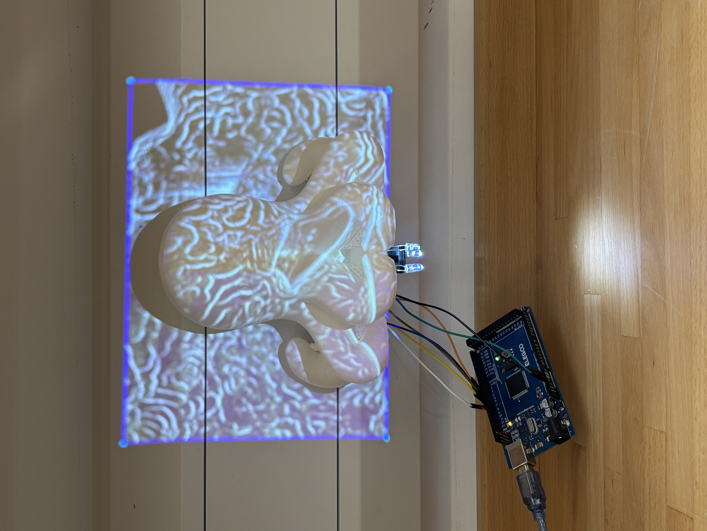
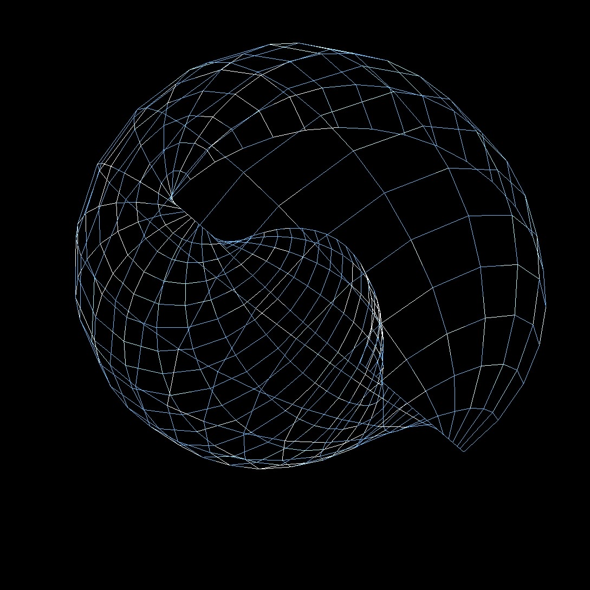
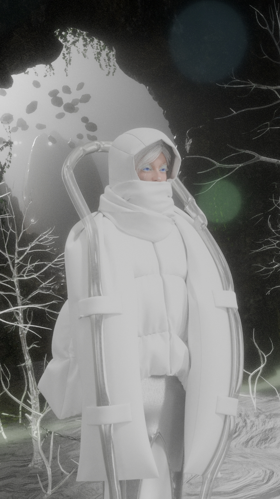
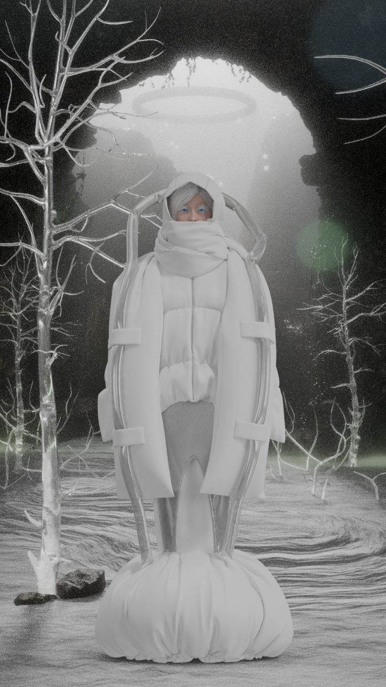
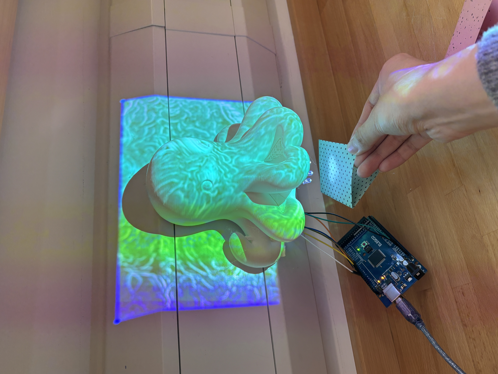
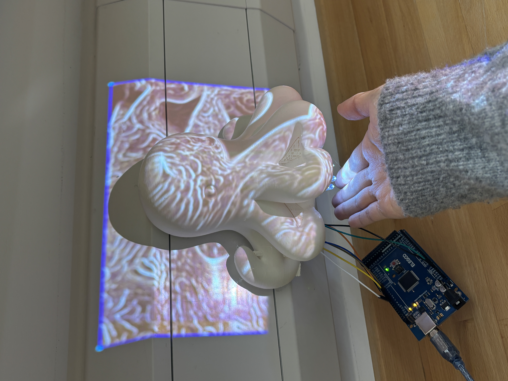
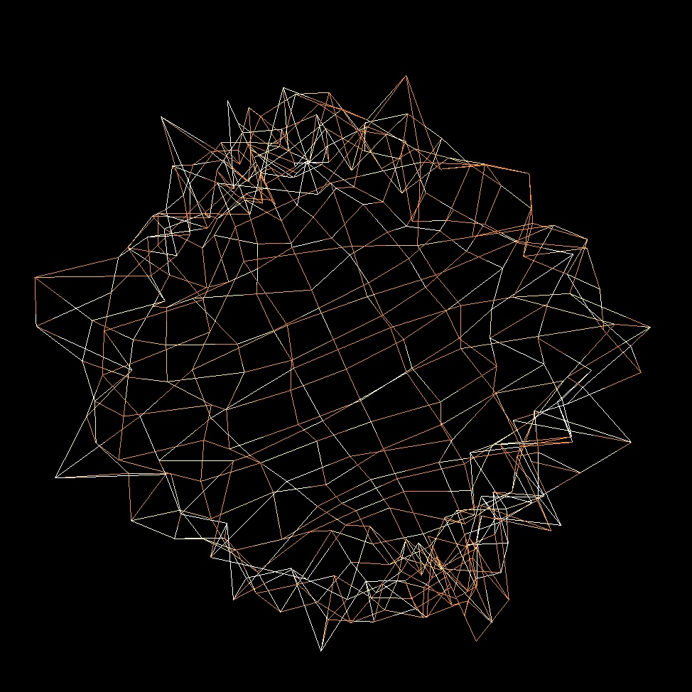
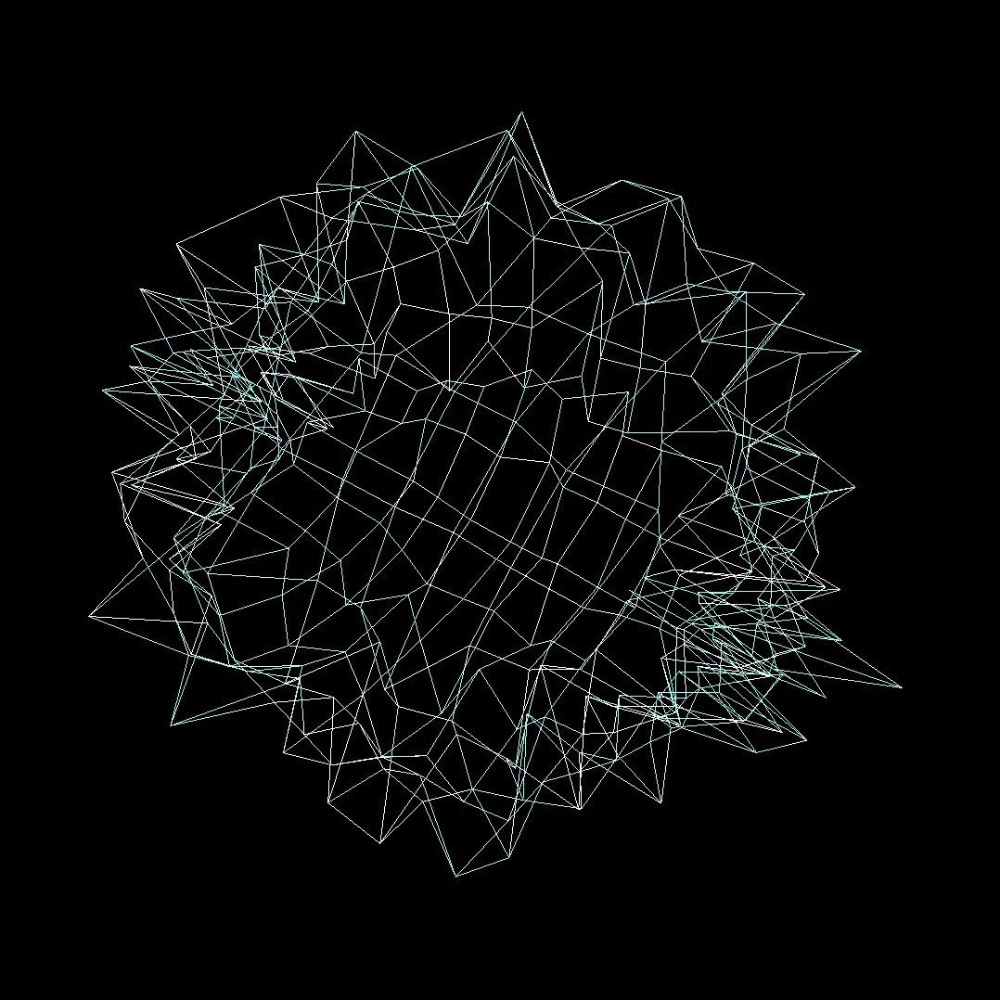

Goldsmiths CompArts 26' Practice-based Research | Exploring the interplay between physical sensors and generative digital organisms.

TouchDesigner / Arduino
Mimic Octopus

Max/MSP / Audio-Visual
Musical Archeo-Conch
p5.js / Game Design
A Murder at the Snowstorm Manor

Digital Fashion / CLO3D
CollidE
×
CollidE
Based on the relationship between AI and humanity in the digital age, 'CollidE' explores how AI has ascended to a 'god-like' status in modern society. As individuals increasingly lose self-autonomy to algorithmic echo chambers, they become devotees of big data. The garment design draws inspiration from biblical depictions of angels and divinity—pale, rational, and overwhelmingly powerful.
Concept Video
Visual Documentation

×
Mimic Octopus
I utilized TouchDesigner to create intricate octopus textures and integrated Arduino with a TCS3200 color sensor. The sensor captures the colors of the audience in real-time to manipulate the visual parameters within TouchDesigner, which are then projected back onto the octopus model, simulating the biological camouflage of a mimic octopus.
Demo Video
Process Shots


×
Musical Archeo-Conch
This experiment explores the mapping relationship between invisible audio data and three-dimensional geometric forms. By constructing a fictional digital archaeological site named ‘archeo-conch’, I utilized Max/MSP to create a frequency-sensitive organism.
Demo Video
Visual Documentation


×
A Murder at the Snowstorm Manor
An immersive, hand-drawn style detective mystery game built with p5.js, exploring narrative vulnerability and digital intervention within a snowy, isolated atmosphere.